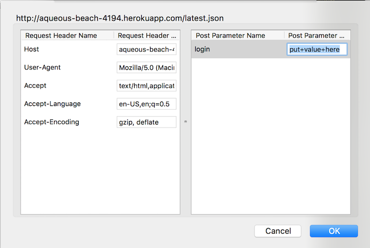

Security Assessment of MapChat
Introduction
Mapchat consists of a client and server-side pair that allow users to post their locations by latitude and longitude in addition to a message to a server, which returns all of its data for all users to each user, displaying users as pins on a map. The following is an assessment of the security of the application as implemented by Yennie Jun, issues encountered, and solutions to the problems found.
Methodology
Black-box testing was conducted prior to examining the server-side code. Tamper Data for Firefox was used to intercept and modify data being passed to the server. Code was then examined to find solutions to identified problems and to examine any attempts at security already implemented in the code.
Abstract
Nearly all of the problems encountered in this assessment stemmed from the assumption by the developer that input sent by users could be trusted to be of the correct form. This is not the case, and using simple tools available for internet browsers, a wealth of malicious possiblities are available to anyone inclined to cause problems. A misunderstanding of the programming language used also appears to be responsible for an issue in which, although an error is found by the program, the program is still allowed to continue running when it should have been stopped as soon as the error was identified.
Issues Encountered
- Cross-site Scripting (XSS)
- Affects '/sendLocation' POST API
- High severity: This allows code to be executed whenever data is displayed (i.e. in the '/' GET API), allowing redirects to malicious sites or the ability to tamper with the database.
- The site is vulnerable to cross-site scripting (XSS). Because user input is not filtered, usage of a proxy like Tamper Data or curl allows a malicious party to add javascript or HTML code to the database, which is then executed whenever data is printed out in the home page ('/' get). With this capability, images, redirects, and alerts/popups can all be added to the home page without the permission of the author. This can range from a mere inconvenience like the alert box shown below to more severe problems like redirects to any number of websites with inappropriate or malicious content (filldisk.com). An example usage of curl is shown below.
curl --data "login=CalvinGraham&lat=<script>window.alert('Bad News')&lng=message=hello" https://aqueous-beach-4194.herokuapp.com/sendLocation
- This results in an alert box being shown on the page upon loading, as shown below.
- Resolution: This can be solved by filtering user input before adding data to the database; removing characters necessary for code injection will limit chances of XSS. OWASP recommends removing characters as follows:
- Login Tampering
- Affects '/sendLocation' POST API and '/latest.json' GET API
- Medium severity: While this threat allows the malicious party to assume the identity of users or force the server to return different data than was originally requested by the client, the fact remains that while the functionality of Mapchat may be compromised, little damage can be done beyond the scope of the program itself.
- As shown above in the curl example, given the accepted logins, a malicious party can assume the identity of any user simply by entering their respective login (in place of CalvinGraham). In the case of the /sendLocation API, this allows the malicious user to post a false location for any user. Additionally, in the case of the location.json API, this could also allow a malicious user to intercept requests sent to the server, modify the login, and cause the server to return the location data for a different user, unbeknownst to the client. This can be done by changing the login field shown below.

- Resolution: Attempting to block proxies can be done a number of different ways; one of which is shown below. Additionally, password protection could help to prevent identity theft by login names alone (it is noted that this was not allowed in the specifications requested for Mapchat).
- Bad Data Crash
- Affects '/sendLocation' POST API
- Low severity: While this does cause the app to crash, the app generally is able to reboot within a few minutes or so, the only consequences being the brief crash and an incomplete entry stored in the database.
- Sending a bad JSON (with double quotes in the middle of it, for example) using curl or Tamper Data causes the app to crash and reboot. This appears to be a result of the server trying to write to the database after sending a response; thus, the program checks for invalid input but does not cease to execute after sending a response for bad input. Example input is shown below.
curl --data "login=CalvinGraham&lat=<script>window.alert("Bad News")&lng=message=hello" https://aqueous-beach-4194.herokuapp.com/sendLocation
- The Papertrail logs show a crash after the bad JSON is sent.
- Resolution: Terminating the execution of code after sending a response could presumeably be done with a return statement within the body of the if statement. Another method would be to place the code following the if statements checking for valid input inside of an else statement, to ensure that the code executes only if the two if statements are false.
Conclusion
Implementing the solutions provided in the body of this document will significantly improve the security of this application, particularly in regards to securing input channels. The most difficult solution to implement would be password protection; additionally, for greater security, implementation of an API key system for ensuring only verified users can post would be desirable but would require more development on both server and client sides.
Resources